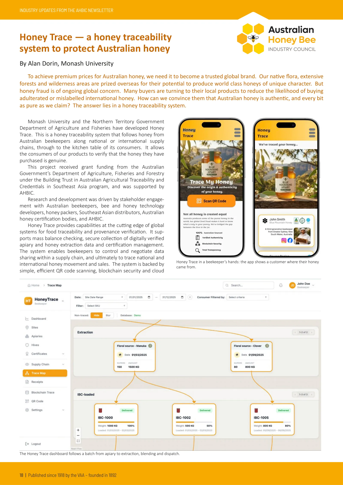

18 | Published since 1918 by the VAA – founded in 1892
Honey Trace — a honey traceability
system to protect Australian honey
By Alan Dorin, Monash University
To achieve premium prices for Australian honey, we need it to become a trusted global brand. Our native flora, extensive
forests and wilderness areas are prized overseas for their potential to produce world class honeys of unique character. But
honey fraud is of ongoing global concern. Many buyers are turning to their local products to reduce the likelihood of buying
adulterated or mislabelled international honey. How can we convince them that Australian honey is authentic, and every bit
as pure as we claim? The answer lies in a honey traceability system.
Monash University and the Northern Territory Government
Department of Agriculture and Fisheries have developed Honey
Trace. This is a honey traceability system that follows honey from
Australian beekeepers along national or international supply
chains, through to the kitchen table of its consumers. It allows
the consumers of our products to verify that the honey they have
purchased is genuine.
This project received grant funding from the Australian
Government’s Department of Agriculture, Fisheries and Forestry
under the Building Trust in Australian Agricultural Traceability and
Credentials in Southeast Asia program, and was supported by
AHBIC.
Research and development was driven by stakeholder engage-
ment with Australian beekeepers, bee and honey technology
developers, honey packers, Southeast Asian distributors, Australian
honey certification bodies, and AHBIC.
Honey Trace provides capabilities at the cutting edge of global
systems for food traceability and provenance verification. It sup-
ports mass balance checking, secure collection of digitally verified
apiary and honey extraction data and certification management.
The system enables beekeepers to control and negotiate data
sharing within a supply chain, and ultimately to trace national and
international honey movement and sales. The system is backed by
simple, efficient QR code scanning, blockchain security and cloud
The Honey Trace dashboard follows a batch from apiary to extraction, blending and dispatch.
Honey Trace in a beekeeper’s hands: the app shows a customer where their honey
came from.
INDUSTRY UPDATES FROM THE AHBIC NEWSLETTER